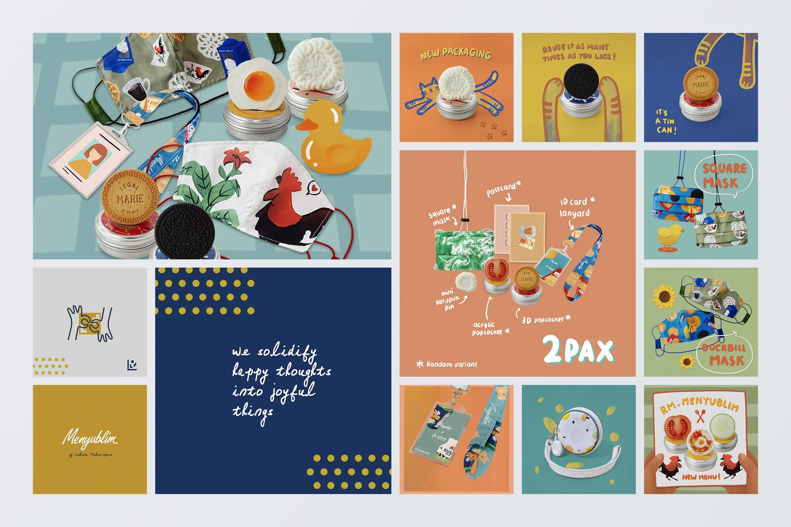

@saatnyamenyublim
A merchandise product brand focused on cutesy yet functional products.
- Category
- Product Development
- Period
- 2019 – 2021
- Role
- Product Manager
- Tools
Saatnya Menyublim is a merchandise product lineup from Lakuna Makerspace, a research and product development organization in Bandung established in 2018. Its tagline, “We solidify happy thoughts into joyful things,” reflects the product direction: creating cutesy products intended to make customers happy when they buy and own them.
Product's Challenge
How might we improving the wedding invitation process for bride and groom so that the invitee can get more information about the wedding, from mandatory wedding information to the bride-groom love story
Product Development's Process
The lineup was developed through an iterative approach. Selected ideas were translated into designs and prototypes, then released to the market in limited quantities for evaluation. Market response determined the next step: successful products could be developed into additional variants, while products with weaker responses were evaluated for improvement or discontinued.
The workflow consisted of:
- Research & Planning
- Design & Prototype
- Release to the Market
- Evaluation & Insight
This created a direct feedback loop between product ideas, prototypes, market releases, and subsequent decisions.
Results
By 2021, the lineup included Popsockets, lanyards, calendars, postcards, pouches, and masks.
Roles & Contribution
Team Structure
- Nurizka F — Product Manager
- Firda Nur Arafah — Production and Operation Officer & Product Designer
- Putik Amirasari — Visual Brand Director & Visual Designer
- Rizal Althur — Product Designer & Content Creator
- Regina Dyani — Product Designer & Production Officer
- Nabila Larasati — Product Designer & Marketing
- Firman Muttaqin — Product Designer
- Irham Mulkan R — Product Designer
- Alisa Alwenia — Sales & Marketing
Roles
Product Manager
The role focused on facilitating product planning, maintaining documentation and insight, managing team finances, and coordinating the pace of product work.
Key Activities
- Facilitated and participated in discussions for product planning and design.
- Documented discussion outcomes, feedback, and insights.
- Managed the team's finances.
- Elaborated and managed the pace of product development.
Learning & Takeaways
Working on Saatnya Menyublim was an opportunity to learn through egalitarian collaboration with a team of designers. Maintaining that kind of collaboration required continuous adjustment, supported by different management approaches and tools. Despite the challenges, the team continued to make progress toward its goals.
Competencies-related
- Product & Project Management — Product planning, financial management, documentation, and development pacing.
- Experience Design — Translating product ideas into tangible designs and prototypes.
- Digital Product Development — Applying an iterative product development cycle from idea to market evaluation.
- Technology & Cross-functional Collaboration — Coordinating design, production, marketing, and other team functions.
Related Links
- Instagram:
@saatnyamenyublim - Shopee:
/lakunastore2019